Film Room
Eighteen videos that teach the hands-on skills the field guide can only describe. Watch before you fly: there is no cell service at the lodge, and the videos need internet.
Watch these four, in this order
Roughly 30–50 minutes of video. Aim to have all four watched before your bags are packed. Checkboxes remember themselves.
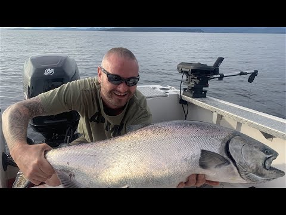
▶Down-Rigging 101 — Tutorial for Beginners
Full beginner walkthrough of the gear you will run every hour of every day — clip tension, deploying, clearing. Watch before you touch the Scotty on day one.
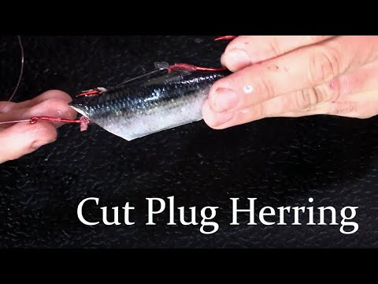
▶How to Rig a Cut Plug Herring for Salmon Fishing
A charter captain’s step-by-step of the trip’s signature bait: the beveled head cut, the tandem-hook rig, and checking the roll boat-side — exactly the guide’s method. Watch it, then practice the cut dockside on night one.
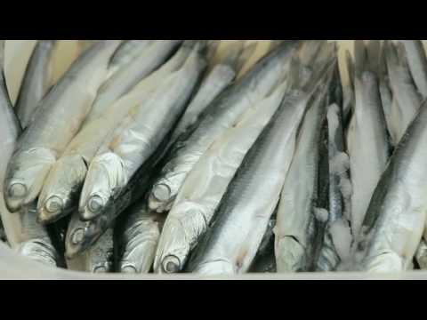
▶Rigging an Anchovy on a Teaser Head for Salmon Trolling
Gibbs Delta — the company behind the Rhys Davis heads the lodge stocks — with a Vancouver charter pro: head insertion, toothpick pinning, tuning the roll. The roll-tuning mindset transfers to everything you troll.
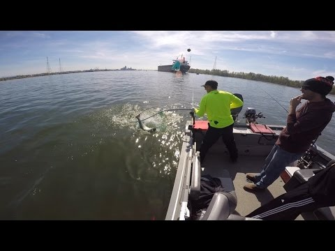
▶How to Net a Spring Chinook Salmon
Boat-based netting walkthrough — net-man positioning, leading the fish, the two-person endgame. The one moment of the trip you cannot retry; both people in the boat should watch it.
Room for more? Add the sounder-basics pick or the halibut rig below, depending on your weak spot.
Bait work
GUIDE §6Cut-plug, teaser heads, and brine — the disciplines that separate guided results from unguided ones.
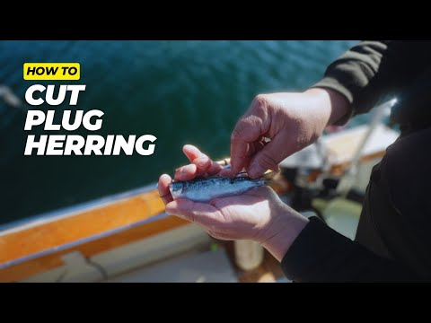
▶Rolling Herring — Everything You Need to Know
A recent deep-dive devoted to one thing: getting the barrel roll right — the “check the roll before you send it down” discipline, taught.
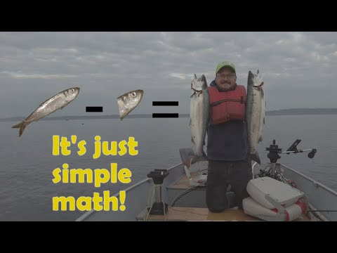
▶Plug Cut Herring for Puget Sound Salmon
Brine → cut → rig in one continuous sequence — the closest verified match to the overnight salt-brine workflow. (No video was verified showing the powdered-milk trick; that stays a guide-only detail.)
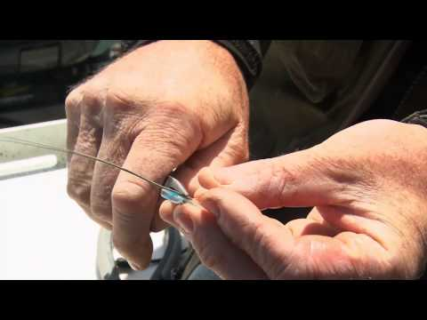
▶How to Get the Most Out of Your Teaser Heads
Murphy Sportfishing on teaser-head fine-tuning — a second angle on the anchovy system, from the same coast you will fish.
Downriggers, stacking, blowback
GUIDE §4The 2026 two-layer rig lives or dies on these mechanics.
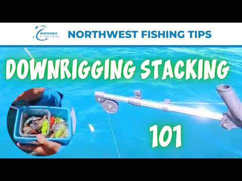
▶Downrigger Stacking Techniques — Northwest Fishing Tips
A dedicated demo of putting a second rod on the same cable — the exact stacking skill the guide asks you to run 80–100 ft above the ball. The most trip-relevant video after the syllabus.
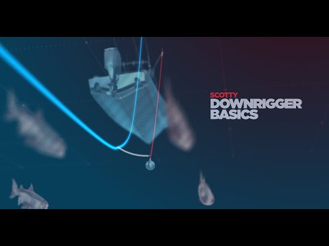
▶Scotty — How to Use a Downrigger
The maker’s own explainer for the exact brand on most BC lodge boats. Clean fundamentals to pair with Down-Rigging 101.
No video is dedicated to blowback or the flasher-rotation speed check — both are touched on inside the 101-style videos above. The working numbers: at 100 ft expect true depth 15–25% shallower than the counter reads, and a flasher is at correct speed when it rotates a full continuous 360°.
Reading the sounder
GUIDE §4The primary instrument of a heatwave year: thermocline, bait balls, manual gain.
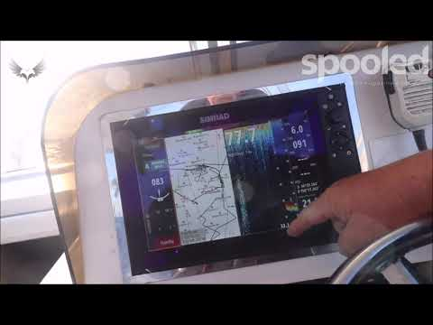
▶Sounder Tips for Finding Bait Balls
Genuinely saltwater screen-reading — manual gain and bait-ball identification. The target is marlin, but seeing soft returns transfers directly to Hakai’s thin, patchy bait.
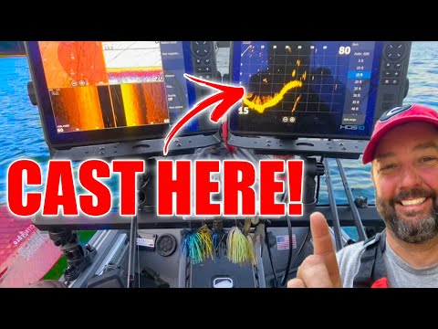
▶How to Read a Fishfinder — What to Look For
The best verified fundamentals course — arches, gain, and thermocline banding — though it leans freshwater. Between the two, everything the guide asks of the sounder is covered.
No good BC/PNW saltwater-salmon sounder tutorial seems to exist. These two picks jointly cover the required skills; apply them with the guide’s salmon-specific notes (thermocline as a faint band, bait at or below it, fish the arches at the edges).
Fighting and landing big chinook
GUIDE §5 · §9The netting half is in the syllabus (Watch 4). This is the fighting half.
Fishing Tips — How to Fight Big Fish (and Win the Battle)
Drag management, rod angles, letting runs happen — the discipline for the “slow, heavy, unstoppable” fish the ten-second ID table says is a spring. Not salmon-specific, but the best verified treatment of the mechanics.
No single video covers fight-plus-net of a big saltwater chinook from a small boat; this video and Watch 4 together cover both halves.
Halibut, lingcod, rockfish release
GUIDE §7 · §2Spreader bars, jigging, and the descending device the regulations expect you to use.
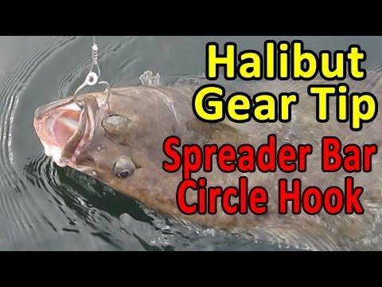
▶Halibut Rigs — Circle Hook and Spreader Bar Setup
Exact match to the guide’s rig — spreader bar, circle hook, don’t set the hook. A classic, and still the definitive BC version.
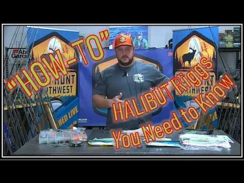
▶“How-To” Halibut Rigging (A to Z)
A fuller A-to-Z rigging session — good second angle on hardware and bait choices (remember: ask the lodge to save your salmon bellies).
How to Vertically Jig Big Lingcod
Jig cadence, staying vertical, and the hit-on-the-drop bite the guide describes. Dart-style metal jigs and swimbaits — the same family as the Deep Stinger and Point Wilson Dart in your box.
Deep Sea Jigging — Lingcod from 250 ft in the Pacific
On-the-water BC lingcod jigging with instructional narration — the closest verified BC context, including the steady-retrieve habit that matters when a hitchhiker ling grabs your rockfish.
Using a Deepwater Release Device on a Rockfish
A biologist demonstrating a SeaQualizer-style release on a silvergray rockfish — a species you will actually encounter at Hakai. Pairs with the descending-device expectation and the yelloweye non-retention rule.
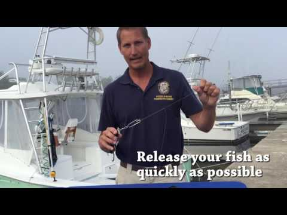
▶How to Use a SeaQualizer Descending Device
Clearest device-specific mechanics — depth setting, clipping to a weighted rod. Florida agency, identical technique. (West-coast backup, also verified: Reel West Coast, Preserve Rockfish Bycatch — no DFO/BC-produced descender video exists that we could find, and the ling-on-a-rockfish trick stays with the guide.)